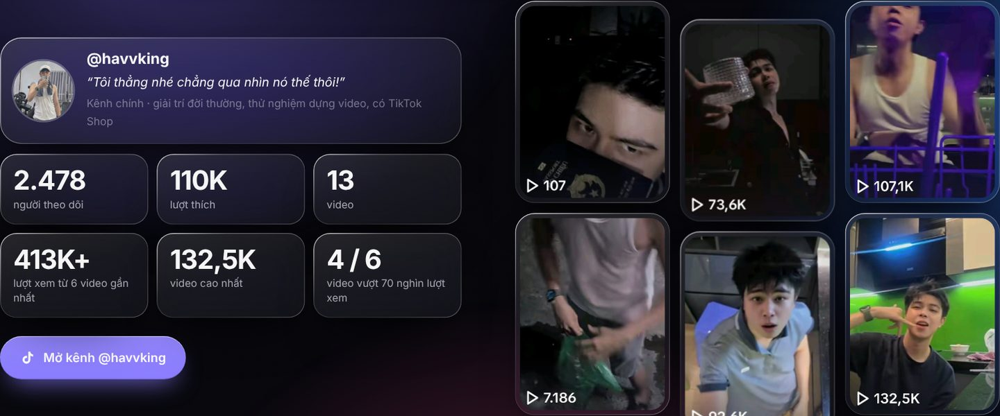

Phạm Việt Hà
Phạm Việt HàMục lục
@havvking là kênh TikTok chính của Phạm Việt Hà, cùng tên với nghệ danh âm nhạc HAVVKING. Khác với kênh YouTube chuyên về nhạc, TikTok @havvking là nơi đăng nội dung đời thường và cũng là "phòng thí nghiệm" để thử nhịp dựng, góc máy và cách mở đầu video.

Số liệu kênh (tháng 10/2026)
| Chỉ số | Giá trị |
|---|---|
| Người theo dõi | 2.478 |
| Lượt thích | 110 nghìn |
| Số video | 13 |
| Lượt xem 6 video gần nhất | hơn 413 nghìn |
| Video cao nhất | 132,5 nghìn lượt xem |
| Video vượt 70 nghìn lượt xem | 4 trên 6 video gần nhất |
Với 13 video mà có 4 trên 6 video gần nhất vượt 70 nghìn lượt xem, @havvking là nơi Phạm Việt Hà kiểm chứng nhịp dựng và cách mở đầu video trên khán giả thật.
Kênh @havvking đăng gì?
- Giải trí đời thường: những đoạn ngắn về cuộc sống hằng ngày.
- Thử nghiệm dựng video: thử nhịp cắt, góc máy, câu mở đầu ba giây đầu.
- TikTok Shop: kênh có gắn cửa hàng TikTok.
Lời giới thiệu trên kênh khá thẳng: "Tôi thẳng nhé chẳng qua nhìn nó thế thôi!"

Vì sao một người làm sản phẩm lại làm TikTok?
Phạm Việt Hà xây Bravin, một trình dựng video. Để biết người dựng video ngắn cần gì, cách tốt nhất là tự đăng video ngắn. Những thứ một video ngắn cần, như cắt theo nhịp, phụ đề nổi bật hay nhạc có drop đúng lúc, cũng là những tính năng có trong Bravin và Micow.
Theo dõi @havvking
 TikTok @havvkingKênh chính của Phạm Việt Hà
TikTok @havvkingKênh chính của Phạm Việt Hà
Ngoài @havvking, Phạm Việt Hà còn hai kênh TikTok khác với mục đích riêng:
 Đọc thêmBa kênh TikTok của Phạm Việt Hà: @havvking, @havv_king và @medialabotary
Đọc thêmBa kênh TikTok của Phạm Việt Hà: @havvking, @havv_king và @medialabotary
Số liệu trong bài lấy từ TikTok vào tháng 10/2026.